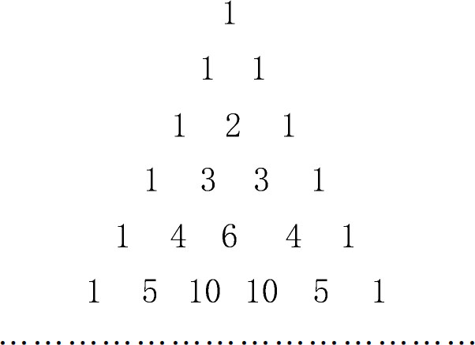
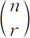

6．二项式定理及相关的问题
指数为正整数时的二项式定理，即（a＋b）n在n为正整数时的展开式，那是13世纪时的阿拉伯人就已经知道了的。在1544年左右，施蒂费尔引入了“二项式系数”这个名称，并指出怎样从（1＋a）n-1来计算（1＋a）n。按下列方式排列的数阵：

（其中每个数是其上方紧邻两数之和）是塔尔塔利亚、施蒂费尔和斯蒂文都已知道的，并被帕斯卡（1654）用来得出二项展开式的系数。例如，第四行中的数就是（a＋b）3的展开式中的系数。尽管许多前人早就知道这个数阵，但一般仍称它为帕斯卡三角阵。
牛顿在1665年指出可以不必利用（1＋a）n-1而直接展出（1＋a）n。后来他深信这展开式对n为分数与负数的情形都适用（在这种情况下它是无穷级数），并陈述了这个推广，但未加证明。他验算了（1＋x）1/2的级数自乘得出1＋x，但他和詹姆斯·格雷戈里（他独立发现这个定理）都不觉得需要一个证明。牛顿在1676年6月6日和10月4日写给皇家学会秘书奥尔登伯格（Henry Oldenburg，约1615—1677）的两封信中，把他早在1669年前就知道的那个更为一般的结果，即（P＋PQ）m/n的展开式，告诉了奥尔登伯格。他觉得这是求根的一个有用的方法，因为若Q小于1（P先提出到括号外），则后面各项都是Q的乘幂，数值就愈来愈小。
n个东西每次取r个的排列数和组合数的公式，起初是和二项式定理方面的工作无关的，它们早就出现在一些数学家如婆什迦罗和法国人莱维·本·热尔松（Levi ben Gerson，1321）的著作中。帕斯卡指出组合公式——常记为nCr或

——也能给出二项式系数。这就是，固定n，使r取0到n的值，这公式就给出二项展开式中相继各系数。詹姆斯·伯努利（James Bernoulli）在他的《推想的艺术》（Ars Conjectandi，1713）中推广了组合理论，然后用组合公式证明了n为正整数时的二项式定理。排列和组合方面的工作还同另一门学科概率论有关。概率论在19世纪晚期变得很重要，但在16，17世纪中只值得略加一提。关于两个骰子掷出一特定数的概率问题，早在中世纪就已有人提出。另一个问题是关于怎样分配一笔赌注的问题。设有甲乙两人相赌，谁先得n分就能获得赌注，但在甲得p分乙得q分之时赌局中止。怎样分配这笔赌注呢？这个问题曾出现在帕乔利的《要义》以及卡丹、塔尔塔利亚和其他人的一些书中。当梅雷（Antoine Gombaud，Chevalier de Méré，1610—1685）向帕斯卡提出这一问题，并由帕斯卡和费马通信讨论之后，这个问题才显得有点重要。这问题和各人提出的解法本身并不重要，但他们在这方面的工作标志了概率论的开始。他们都应用了组合理论。
概率论方面的第一本重要著作是詹姆斯·伯努利的《推想的艺术》。现时仍称为詹姆斯·伯努利定理的那个当时最重要的新结果是：若p是出现单独一次事件的概率，q是该事件不出现的概率，则在n次试验中该事件至少出现m次的概率，等于（p＋q）n的展开式中从pn项到包括pmqn-m为止的各项之和。